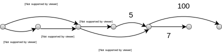

Динамическое программирование
Рассмотрим задачу о самой длинной возрастающей подпоследовательности. Пусть есть целочисленный массив, например [3, 5, 8, 1, 2, 7, 9, 3, 2, 8]. Естественный подход — перебор (перебрать все возможные подмножества, проверить является ли возрастающей и из них выбрать). Можно немного оптимизировать, и сразу отсекать те случаи, когда например, второй элемент оказался меньше чем первый, и значит перебирать уже ничего не нужно.
Давайте посмотрим на какую-нибудь получившеюся подпоследовательность: [1, 2, 4, 8] — в ней все элементы меньше чем 8, и оставшиеся элементы — тоже возрастающая подпоследовательность. То есть можно выбрать первый элемент, и дальше решать подзадачу на оставшемся отрезке исходного массива.
$L[k]$ — длина самой длинной возрастающей подпоследовательности, которая заканчиваются в элементе с номером $k$. То есть $L[\,k\,] = \max_{i < k, M[i] < M[k]}{ \{ L[\,i\,] \} } + 1$.
Идея решения:
- Выделить подзадачи
- Записать соотношение
- Будем вычислять все подзадачи и сохранять значения-ответы (в массив, например)
- Определить порядок вычисления на подзадачах. В нашем случае порядок нужно выбрать таким, чтобы к тому моменту как мы захотели вычислить $L[k]$ нужно, чтобы все элементы $L[i], i=1..k$ были вычислены.
В нешем случае заполним $L[1] = 1$ — самая большая последовательность, которая заканчивается в первом элементе равна одному. Теперь в цикле:
for k = 2 to n:
L[k] = 1
for i = 1 to k - 1:
if (L[i] + 1 > L[k]) and (M[i] < M[k]):
L[k] = L[i] + 1
return L[k] # k — max
Очевидно, сложность равна $O(n^2)$. Теперь нам нужно восстановить элементы последовательности. Будем при выборе максимума в $L[k]$ будем запоминать, откуда он пришёл (из какого $i$). Заведём массив $P[1:n] = \{ 0 \}$.
if (L[i] + 1 > L[k]) and (M[i] < M[k]):
L[k] = L[i] + 1
P[k] = i
Раскручивая обратно массив $P$, мы сможем найти подпоследовательность. $O(n^2)$ времени, $O(n)$ памяти. Решить задачу можно и за $O(n \log n)$ (заюзать бинарный поиск, чтобы заменить внутренний цикл).
Связь с кратчайшими путями
Есть ациклический граф, вершины которого отсортированы в топологическом порядоке (все рёбра идут слева направо):
Нужно найти кратчайший путь от $s$ до $t$. (Или длиннейшнего пути, эти задачи эквивалентны в случае ацикличного графа.)
Можно заметить, что задача похожа с предыдущей, в ней тоже можно нарисовать граф зависимостей.
- $D[v]$ — расстояние от $s$ до $v$
- $D[v] = \min_{u \rightarrow v}{ \{ D[u] + w(u, v) \} }$
- В порядке топологической сортировке (в том в котором рёбра идут слева направо, что одно и то же).
Задача о рюкзаке
Нас будет интересовать "непрерывная задача о рюкзаке". Есть вор, у него рюкзак вместительностью 100 литров. Ему нужно максимизировать стоимость товаров в рюкзаке.
"Жадный алгоритм": наполняем рюкзак в порядке убывания удельной стоимости. Задача детская и очень простая. Но вот в дискретном случае всё становится очень грустно.
Дискретная задача о рюкзаке с повторениями
Человек попал на какой-то большой склад, у него есть рюкзак вместительностью $W$ килограмм. И есть $n$ штук товаров, которые характеризуются следующими параметрами:
- $w_i$ — вес
- $v_i$ — стоимость
Например, $w$ = 10. Жадный: 12, оптимальный: 16.
| ${w}$ | 6 | 5 |
| ${v}$ | 12 | 8 |
Решаем: 1. $V[k]$ — максимальная стоимость рюкзака из $k$ килограммов. 2. $V[k] = \max_{\, i\ :\ w_i \leqslant k}{ \{ v_i + V[k - w_i] \} }$ — стоимость товара + максимальная стоимость рюкзака без этого товара 3. Порядок естественный
V[1 : W] = { 0 }
for k = 1 to W:
for i = 1 to n:
if (w_i <= k) and (v_i + V[k - w_i] > V[k])
V[k] = v_i + V[k - w_i]
Время работы $O(n \cdot w)$. Такая сложность называется квазиполимиальной. $w$ — вместимость рюкзака, она задана во входе программы, числом (бинарным). Длина входа $\approx |W| + \sum_{i=1}^{n}{\left( |v_i| + |w_i| \right)}$, но $W \approx 2^n$, правая часть $O(n)$, суммарная сложность $O(n\cdot 2^n)$. Алгоритм, короче, не является полиномиальным от длины входа (вход может быть очень большим, например, где $|W| \approx 2^50$, и мы задачу быстро не решим).
Без повторений
Вор забрался в эрмитаж. Все вещи уникальны. То есть надо запоминать, что у нас есть вещи, которые мы уже положили. Попытаемся ввести подзадачу.
-
$V[k, m]$ — максимальная стоимость рюкзака вместительностью $k$, который заполнен предметами от $1\,..\,m$. (Пронумеровали предметы, и запрещаем класть предметы после $m$-го).
-
$V[k, m]$ — предмет с номером $m$ мы либо положим, либо не положим. То есть возможны две ситуации. Если положим, то переходим к подзадачам, где $k$ уменьшилось на $w_m$ + стоимость $v_m$. Второй, если мы не положили: вместимость рюкзака не изменилось, но предмет с номером $m$ мы не берём: $\max{\{ V[k - w_m, m - 1] + v_m, V[k, m-1]\}}$
-
Заполнять нужно столбец за столбцом или строка за строкой (см. рисунок ниже).
Сложность нашего алгоритма получилась $O(n \cdot W)$ (нужно заполнить матрицу размера $n \cdot W$), памяти столько же. Если внимательно посмотреть, то можно заметить, что если заполнять по столбцам, то хранить можно только предыдущий столбец (или два?), т.е. хранить можно $O(W)$. Можно хранить даже один столбец (верхнюю левую часть столбца, и нижнюю правую куда указывает стрелка), если перезаписывать снизу вверх. Но мы не можем восстановить исходную последовательность, переходя в соседний стобец (задача не сводится к первой).
Задача о перемножении матриц
Предположим, нужно перемножить несколько матриц: $A \times B \times C \times D$. Если взять две матрицы: $(n_\text{rows}, m_\text{cols}) \times (m_\text{rows}, k_\text{cols}) \rightarrow (n_\text{rows}, k_\text{cols})$. Потребуетcя $n \times m \times k$ операций.
Пусть: A — 10 x 20, B — 20 x 40, C — 40 x 100.
- $(AB)C = 10 \cdot 20 \cdot 40\ \ + 10 \cdot 40 \cdot 100 = 48000$
- $A(BC) = 20 \cdot 40 \cdot 100 + 10 \cdot 20 \cdot 100 = 100'000$
То есть за счёт правильной расстановки скобок мы могли бы сэкономить. Задача: каково минимальное количество перемножений чисел?.
Вход: $m_0, m_1, m_2, \ldots, m_n$, то есть матрица $A_i$ имеет размерность $m_{i-1} \times m_i$.
- $C[i, j]$ — минимальное количество операций для $A_i \times \ldots \times A_j$ — для произведения на подотрезке.
- Будем разбивать отрезок на две части: $C[i, j] = \min_{i \leqslant k \leqslant j - 1}{C[i, k] + C[k + 1, j]} + m_{i-1} * m_k * m_j$
- Порядок опишем кодом:
for s = 1 to n # s — длина отрезка
for i = 1 to n - s:
C[i, i+s] = min (C[i, k] + C[k+1, i+s]) по i ≤ k ≤ i+s-1
+ m_{i-1} * m_k * m_{i+s}
То есть сначала заполняем диагональ, после этого заполняем над-диагональ и под-диагональ, это соответствует отрезком длины два. После заполняем дальше.